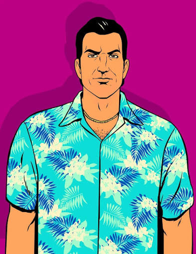

Identitas Lengkap
Thomas Vercetti, dikenal sebagai “The Harwood Butcher”.
The Man Who Owns Vice City.
Jelajahi biografi buronan Liberty City yang membangun kerajaan kriminal terbesar di jalanan Vice City era 80-an.

Thomas Vercetti, dikenal sebagai “The Harwood Butcher”.
Bos kriminal, pengusaha real estate, dan pemimpin Vercetti Family.
Vice City, Florida pada tahun 1986. Berasal dari Liberty City.
Ray Liotta, dengan persona sinematik yang ikonik.